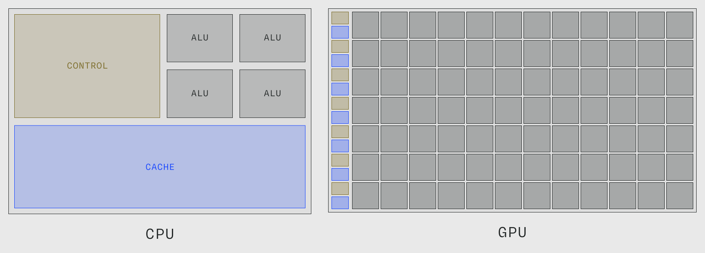
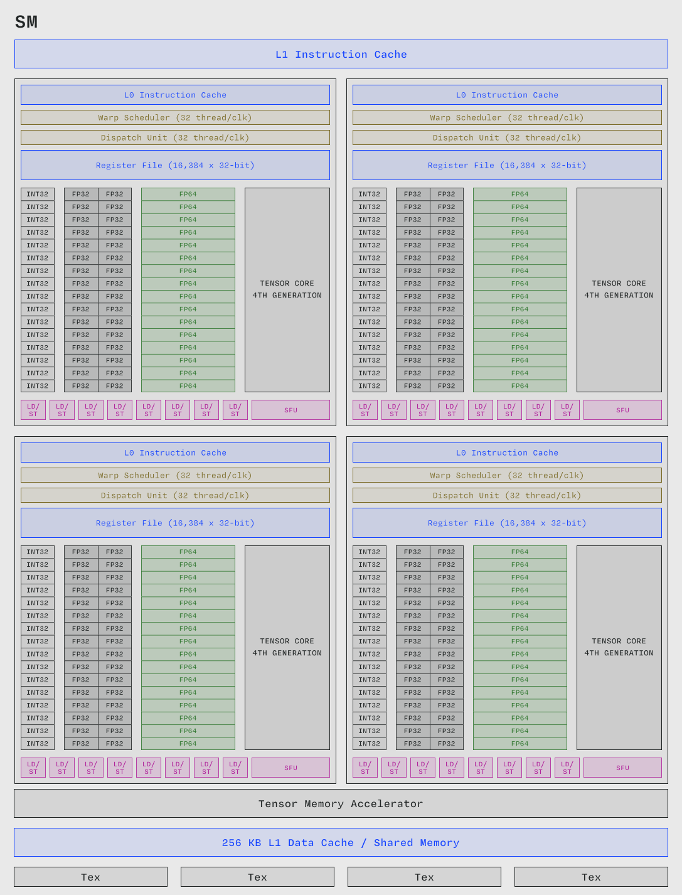

Taxonomy
- https://yosefk.com/blog/simd-simt-smt-parallelism-in-nvidia-gpus.html
- https://www.stuffedcow.net/files/gpuarch-ispass2010.pdf
SIMT

GPGPU
- archlinux wiki for GPGPU: https://wiki.archlinux.org/title/GPGPU
- what is GPGPU: https://en.wikipedia.org/wiki/General-purpose_computing_on_graphics_processing_units
GPGPU
- OpenCL
- CUDA (NVIDIA)
- ROCm (AMD)
| Feature | CUDA (NVIDIA) | OpenCL (on NVIDIA) |
|---|---|---|
| Support | NVIDIA GPUs only | NVIDIA, AMD, Intel, CPUs, FPGAs, etc |
| Performance | Generally higher, more optimized | Good, but usually lower than CUDA |
OpenCL
- OpenCL: https://www.khronos.org/opencl/
- Wikipedia: https://en.wikipedia.org/wiki/OpenCL
OpenCL is a standard for cross-platform parallel programming of diverse accelerators. As such it is not CUDA specific, but targets CPUs, GPUs, DSPs and FPGAs. The OpenCL API specification enables each chip to have its own OpenCL drivers tuned to its specific architecture. To be conformant to OpenCL, hardware vendors must become OpenCL Adapters and submit their conformance test results for review. NVIDIA is OpenCL conformant, which allow us to use the C API provided by OpenCL to directly call the NVIDIA runtime. This means that learning OpenCL will translate to other platforms as well, since they have to conform to the OpenCL specification if they are conformant.
CUDA (NVIDIA)
Compute Unified Device Architecture (CUDA).
SM -> Warp -> Block -> Grid -> Kernel
Terminology
| Description | |
|---|---|
| Streaming Multiprocessors (SM) | |
| Warp | A group of 32 threads. |
| Warp scheduler | A dedicated scheduler for optimizing the execution flow of warps. |
| Thread group | |
| CUDA core | |
| Tensor core | |
| Special function unit | |
| Load/store unit |
Streaming Multiprocessor (SM)
Streaming Multiprocessors (SMs) is the fundamental processing unit within NVIDIA GPUs (See Figure 2 for an overview of NVIDIA's H100 GPU SM). SMs are roughly analogous to CPU cores. Both execute computations and store state. However, compared to CPU cores, GPU SMs are simple and weaker processors. Execution in SMs is pipelined within an instruction (as in most CPUs since the 1990s), but there is no speculative execution or instruction pointer prediction (as in most CPUs these days).
GPU SMs can execute more threads in parallel than CPUs. The H100 GPU can execute more than 16 000 threads (132 SMs x 32 threads x 4 warps > 16 000), while e.g., the AMD EPYC 9965 uses a total of 384 threads. However, most consumer-grade CPUs are far from even that amount of threads.
GPU SMs support a large number of concurrent threads, i.e., threads that can be interleaved. A single SM on the H100 can concurrently execute up to 2048 threads split across 64 thread groups of 32 threads each. That means that the whole H100 with its 132 SMs can execute a total of 250k concurrent threads.

Brief
- The host is the CPU available in the system. The system memory associated with the CPU is called host memory.
- The GPU is called a device and GPU memory likewise called device memory.
To execute any CUDA program, there are three main steps:
- Copy the input data from host memory to device memory, also known as host-to-device transfer.
- Load the GPU program and execute, caching data on-chip for performance.
- Copy the results from device memory to host memory, also called device-to-host transfer.
Every CUDA kernel starts with a global declaration specifier. Programmers provide a unique global ID to each thread by using built-in variables.
A group of threads is called a CUDA block. CUDA blocks are grouped into a grid. A kernel is executed as a grid of blocks of threads (Figure 2).
Each CUDA block is executed by one streaming multiprocessor (SM) and cannot be migrated to other SMs in GPU (except during preemption, debugging, or CUDA dynamic parallelism). One SM can run several concurrent CUDA blocks depending on the resources needed by CUDA blocks. Each kernel is executed on one device and CUDA supports running multiple kernels on a device at one time.
The CUDA programming model provides three key language extensions to programmers:
- CUDA blocks—A collection or group of threads.
- Shared memory—Memory shared within a block among all threads.
- Synchronization barriers— Enable multiple threads to wait until all threads have reached a particular point of execution before any thread continues.
There are also many third-party tool-chains available:
- PyCUDA — Use CUDA API operations from a Python interface.
- OpenCL —Use low-level API operations to program CUDA GPUs.
Three step processing in heterogeneous architecture:
- CPU - Bridge - CPU memory
- PCIe or NVLink Bus
- GigaThread - Interconnect - L2 - DRAM
Steps:
- We have to copy from the CPU to the GPU.
- Do the work, running CUDA kernels.
- Copy results back to CPU memory from GPU memory.
__global__ void mykernel(void) {
}
__global__ indicates that a function:
- Runs on the device
- Is called from the host code (can also be called from other device code)
nvcc separates source code into host and device components:
- Device functions (e.g.,
mykernel()) processed by NVIDIA compiler - Host functions (e.g.,
main()) processed by standard host compiler.
We need a way to call this on the GPU. Kernel launch or triple angle brackets will mark a call to device code:
mykernel<<<1,1>>>();
The parameters inside the brackets are the CUDA kernel execution configuration.
What about memory management? Host and device memory are separate entities. Device pointers point to GPU memory.
- Typically passed to device code.
- Typically not dereferenced in host code.
Host pointers point to CPU memory:
- Typically not passed to device code.
- Typically not dereferenced in device code.
(Special cases: Pinned pointers, ATS, managed memory)
Simple CUDA API for handling device memory:
cudaMalloc(), cudaFree(), cudaMemcpy() // similar to C equivalents
CUDA programming model
The CUDA programming model allows the programmer to define C++ functions, called kernels, which are executed N times in parallel by N different CUDA threads when they are invoked (depending on configuration). A kernel is defined using the __global__ declaration specifier like so:
// Kernel definition
__global__ void VecAdd(float* A, float* B, float* C)
{
int i = threadIdx.x;
C[i] = A[i] + B[i];
}
int main()
{
...
// Kernel invocation with N threads
VecAdd<<<1, N>>>(A, B, C);
...
}
Using the <<<...>>> syntax we can specify the execution configuration. In the above example we specify that the kernel VecAdd should be executed on N different CUDA threads.
Core
CUDA core
Tensor core
Units
Special function unit
Load/store unit
Warp
Memory
Memory coalescing
- memory coalescing: https://homepages.math.uic.edu/~jan/mcs572f16/mcs572notes/lec35.html
Drivers (archlinux)
Run
$ lspci -k -d ::03xx
01:00.0 VGA compatible controller: NVIDIA Corporation GP104 [GeForce GTX 1070] (rev a1)
Subsystem: ASUSTeK Computer Inc. Device 8599
Kernel driver in use: nouveau
Kernel modules: nouveau, nvidia_drm, nvidia
Look for your name:
https://nouveau.freedesktop.org/CodeNames.html
Install correct package according to: https://wiki.archlinux.org/title/NVIDIAhttps://wiki.archlinux.org/title/NVIDIA#Installation
Restart machine
nvidia-smiInstall cuda (also see https://docs.nvidia.com/deploy/cuda-compatibility/)
pacman -S cuda
Verify installation
nvcc --version
- nvidia
- nvidia-utils: provides nvidia-libgl, opengl-driver, vulkan-driver
- cuda
- opencl-nvidia
Interacting with CUDA
There exists several wrappers of the CUDA API.
- PyCUDA: https://github.com/inducer/pycuda
Lets you access NVIDIA's CUDA parallel computation API from Python. - Official CUDA API bindings: https://github.com/NVIDIA/cuda-python
NVIDIA's own language bindings for the CUDA API written in Python/Cython. This is similar to (1) in abstraction level. - Numba: https://github.com/numba/numba
NumPy-aware optimizing compiler for Python, which means it uses the LLVM compiler project to generate machine code directly from Python syntax. Numba provides a high-level interface and uses cuda-python (2) under the hood to accelerate computations when compiling for CUDA.
Numba
Numba is an open source, NumPy-aware optimizing compiler for Python sponsored by Anaconda, Inc. It uses the LLVM compiler project to generate machine code from Python syntax. Numba can compile a large subset of numerically-focused Python, including many NumPy functions. Additionally, Numba has support for automatic parallelization of loops, generation of GPU-accelerated code, and creation of ufuncs and C callbacks.
- Numba: https://numba.pydata.org/
- Numba github: https://github.com/numba/numba
- https://numba.readthedocs.io/en/stable/cuda/index.html
ROCm (AMD)
ROCm (Radeon Open Compute) is AMD's open-source parallel computing architecture and framework.
HIP
HIP (Heterogeneous Interface for Portability) is AMD's dedicated GPU programming environment.
Software stacks
- Tinygrad
- Pytorch
- Jax
Tinygrad
Tinygrad takes advantage of the fact that every tensor operation is either elementwise, or reduction. The obvious advantage is to build up abstraction that makes optimization easier (think of this in the context of Complex Instruction Set Architecture vs RISC).
Pytorch
Jax
JAX is a Python library for accelerator-oriented array computation and program transformation, designed for high-performance numerical computing and large-scale machine learning.
JAX can automatically differentiate native Python and NumPy functions. It can differentiate through loops, branches, recursion, and closures, and it can take derivatives of derivatives of derivatives. It supports reverse-mode differentiation (a.k.a. backpropagation) via jax.grad as well as forward-mode differentiation, and the two can be composed arbitrarily to any order.
JAX uses XLA to compile and scale your NumPy programs on TPUs, GPUs, and other hardware accelerators.
Tensor abstraction
A Tensor is a multi-dimensional matrix containing elements of a single data type.
Define
- SM
- CUDA programming model
- GPUs are 1024 bit SIMD machines?
Resources
Top
- cuda c programming: https://docs.nvidia.com/cuda/cuda-c-programming-guide/
- Really nice glossary: https://modal.com/gpu-glossary
- cuda-training-series: https://www.olcf.ornl.gov/cuda-training-series/
- cuda best practices: https://docs.nvidia.com/cuda/cuda-c-best-practices-guide/index.htmlhttps://docs.nvidia.com/cuda/cuda-c-best-practices-guide/index.html#who-should-read-this-guide
- going further than cuda intro (exercises and where to from here): https://developer.nvidia.com/blog/even-easier-introduction-cuda/https://developer.nvidia.com/blog/even-easier-introduction-cuda/#exercises
- demystify gpu for dl part1 (blog): https://learnopencv.com/demystifying-gpu-architectures-for-deep-learning/
- demystify gpu for dl part2 (blog): https://learnopencv.com/demystifying-gpu-architectures-for-deep-learning-part-2/
- modern gpu architecture explained (blog): https://learnopencv.com/modern-gpu-architecture-explained/
- leetgpu: https://leetgpu.com/
- leetgpu resources: https://www.leetgpu.com/resources
- supercomputing: https://homepages.math.uic.edu/~jan/mcs572f16/mcs572notes/index.html
- fabiensanglard (blog): https://fabiensanglard.net/cuda/
- paul richmond lecture series: https://paulrichmond.shef.ac.uk//education/com4521
Other
- CUDA programming guide: https://docs.nvidia.com/cuda/cuda-c-programming-guide/
- CUDA books archive: https://developer.nvidia.com/cuda-books-archive
- CUDA parallel programming: https://newfrontiers.illinois.edu/news-and-events/introduction-to-parallel-programming-with-cuda/
- Triton: https://triton-lang.org/main/getting-started/tutorials/index.html
- Pytorch doc: https://docs.pytorch.org/docs/stable/index.html
- Pytorch tutorials: https://docs.pytorch.org/tutorials/
- Pytorch zero to mastery: https://www.learnpytorch.io/
- Tinygrad doc: https://docs.tinygrad.org/
- Tinygrad notes: https://mesozoic-egg.github.io/tinygrad-notes/
- Mojo: https://docs.modular.com/mojo/manual/
- cuda refresher: https://developer.nvidia.com/blog/tag/cuda-refresher/
- cuda refresher programming model: https://developer.nvidia.com/blog/cuda-refresher-cuda-programming-model/
- cuda c programming pdf: https://docs.nvidia.com/cuda/pdf/CUDA_C_Programming_Guide.pdf
- nvidia tesla paper: https://www.cs.cmu.edu/afs/cs/academic/class/15869-f11/www/readings/lindholm08_tesla.pdf
- cuda in python part1: https://www.vincent-lunot.com/post/an-introduction-to-cuda-in-python-part-1/
- cuda compatibility: https://developer.nvidia.com/cuda-gpus
- nvidia hpc: https://developer.nvidia.com/hpc
- archlinux gpgpu: https://wiki.archlinux.org/title/GPGPU
- cuda python: https://developer.nvidia.com/cuda-python
- cuda python doc: https://nvidia.github.io/cuda-python/latest/
- cuda python github: https://github.com/NVIDIA/cuda-python/tree/main
- opencl: https://www.khronos.org/opencl/https://www.khronos.org/opencl/#ocl-overview
- archlinux nvidia: https://wiki.archlinux.org/title/NVIDIA
- nvidia codenames: https://nouveau.freedesktop.org/CodeNames.html
- numba nvidia guide: https://developer.nvidia.com/blog/numba-python-cuda-acceleration/
- numba docs: https://numba.readthedocs.io/en/stable/
- nvidia tech blog: https://developer.nvidia.com/blog/
- tiny-gpu: https://github.com/adam-maj/tiny-gpu
- cuda-training-series github: https://github.com/olcf/cuda-training-series/tree/master/exercises
- easy intro to cuda: https://developer.nvidia.com/blog/even-easier-introduction-cuda/
- cub: https://nvidia.github.io/cccl/cub/
- cutlass: cuda templates for linear algebra subroutines: https://github.com/NVIDIA/cutlass
- gpu-puzzles: https://github.com/srush/GPU-Puzzles
- what is a gpu: https://kernel-operations.io/keops/autodiff_gpus/what_is_a_gpu.html
- experiment with printf cuda: https://docs.nvidia.com/cuda/cuda-c-programming-guide/index.htmlhttps://docs.nvidia.com/cuda/cuda-c-programming-guide/index.html#formatted-output
- applied GPU programming: https://www.youtube.com/playlist?list=PLPJwWVtf19Wgx_bupSDDSStSv-tOGGWRO
- cuda ptx interop: https://docs.nvidia.com/cuda/pdf/PTX_Writers_Guide_To_Interoperability.pdf
- gpu mode: https://www.youtube.com/()
- numba cuda: https://nvidia.github.io/numba-cuda/user/index.html
- opencl registry: https://registry.khronos.org/OpenCL/
- turing arch whitepaper: https://fabiensanglard.net/cuda/Turing-Architecture-Whitepaper.pdf
- rust GPU: https://rust-gpu.github.io/blog/2025/07/25/rust-on-every-gpu/